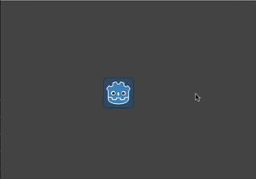
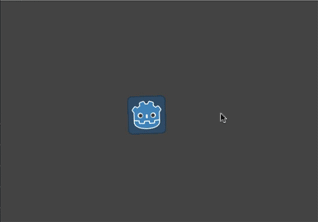

Tạo instance với signal
Signal giúp tách rời (decouple) các đối tượng trong game, cho phép bạn tránh bị buộc vào một cách sắp xếp node cố định. Một dấu hiệu cho thấy có thể cần đến signal là khi bạn thấy mình dùng get_parent(). Tham chiếu trực tiếp đến node cha của một node nghĩa là bạn không thể dễ dàng di chuyển node đó sang vị trí khác trong scene tree. Điều này đặc biệt rắc rối khi bạn tạo instance các đối tượng lúc runtime và muốn đặt chúng ở một vị trí tùy ý trong scene tree đang chạy.
Dưới đây chúng ta sẽ xem xét một ví dụ về tình huống như vậy: bắn đạn.
Ví dụ bắn đạn
Hãy xét một nhân vật người chơi có thể xoay và bắn về phía con trỏ chuột. Mỗi khi nút chuột được nhấn, chúng ta tạo một instance của viên đạn tại vị trí của người chơi. Xem Tạo instance để biết chi tiết.
Chúng ta sẽ dùng một Area2D cho viên đạn, di chuyển theo đường thẳng với một vận tốc cho trước:
extends Area2D
var velocity = Vector2.RIGHT
func _physics_process(delta):
position += velocity * delta
using Godot;
public partial class Bullet : Area2D
{
public Vector2 Velocity { get; set; } = Vector2.Right;
public override void _PhysicsProcess(double delta)
{
Position += Velocity * (float)delta;
}
}
Tuy nhiên, nếu các viên đạn được thêm làm con của người chơi, chúng sẽ vẫn "dính" vào người chơi khi người chơi xoay:

Thay vào đó, chúng ta cần các viên đạn độc lập với chuyển động của người chơi - một khi đã bắn ra, chúng phải tiếp tục bay theo đường thẳng và người chơi không còn tác động đến chúng được nữa. Thay vì thêm vào scene tree làm con của người chơi, sẽ hợp lý hơn nếu thêm viên đạn làm con của scene game "chính", vốn có thể là node cha của người chơi hoặc thậm chí ở cao hơn trong cây.
Bạn có thể làm điều này bằng cách thêm viên đạn trực tiếp vào scene chính:
var bullet_instance = Bullet.instantiate()
get_parent().add_child(bullet_instance)
Node bulletInstance = Bullet.Instantiate();
GetParent().AddChild(bulletInstance);
Tuy nhiên, cách này sẽ dẫn đến một vấn đề khác. Giờ nếu bạn thử kiểm thử scene "Player" một cách độc lập, nó sẽ bị crash khi bắn, vì không có node cha nào để truy cập. Điều này khiến việc kiểm thử mã của người chơi một cách độc lập khó hơn nhiều, đồng thời nếu bạn quyết định thay đổi cấu trúc node của scene chính, node cha của người chơi có thể không còn là node phù hợp để nhận các viên đạn nữa.
Giải pháp là dùng một signal để "phát" các viên đạn ra từ người chơi. Khi đó người chơi không cần "biết" điều gì xảy ra với các viên đạn sau đó - bất kỳ node nào được kết nối với signal đều có thể "nhận" các viên đạn và thực hiện hành động phù hợp để sinh chúng ra.
Đây là mã của người chơi dùng signal để phát ra viên đạn:
extends Sprite2D
signal shoot(bullet, direction, location)
var Bullet = preload("res://bullet.tscn")
func _input(event):
if event is InputEventMouseButton:
if event.button_index == MOUSE_BUTTON_LEFT and event.pressed:
shoot.emit(Bullet, rotation, position)
func _process(delta):
look_at(get_global_mouse_position())
using Godot;
public partial class Player : Sprite2D
{
[Signal]
public delegate void ShootEventHandler(PackedScene bullet, float direction, Vector2 location);
private PackedScene _bullet = GD.Load<PackedScene>("res://Bullet.tscn");
public override void _Input(InputEvent @event)
{
if (@event is InputEventMouseButton mouseButton)
{
if (mouseButton.ButtonIndex == MouseButton.Left && mouseButton.Pressed)
{
EmitSignal(SignalName.Shoot, _bullet, Rotation, Position);
}
}
}
public override void _Process(double delta)
{
LookAt(GetGlobalMousePosition());
}
}
Trong scene chính, chúng ta kết nối signal của người chơi (nó sẽ xuất hiện trong tab "Node" của Inspector)
func _on_player_shoot(Bullet, direction, location):
var spawned_bullet = Bullet.instantiate()
add_child(spawned_bullet)
spawned_bullet.rotation = direction
spawned_bullet.position = location
spawned_bullet.velocity = spawned_bullet.velocity.rotated(direction)
private void OnPlayerShoot(PackedScene bullet, float direction, Vector2 location)
{
var spawnedBullet = bullet.Instantiate<Bullet>();
AddChild(spawnedBullet);
spawnedBullet.Rotation = direction;
spawnedBullet.Position = location;
spawnedBullet.Velocity = spawnedBullet.Velocity.Rotated(direction);
}
Giờ các viên đạn sẽ giữ chuyển động riêng của chúng, độc lập với việc xoay của người chơi:
